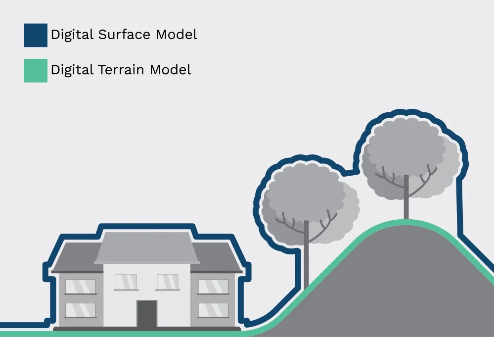
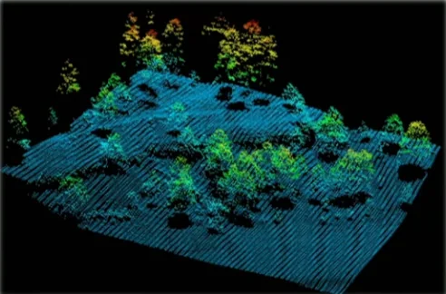
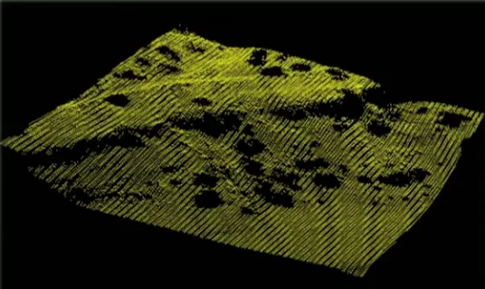
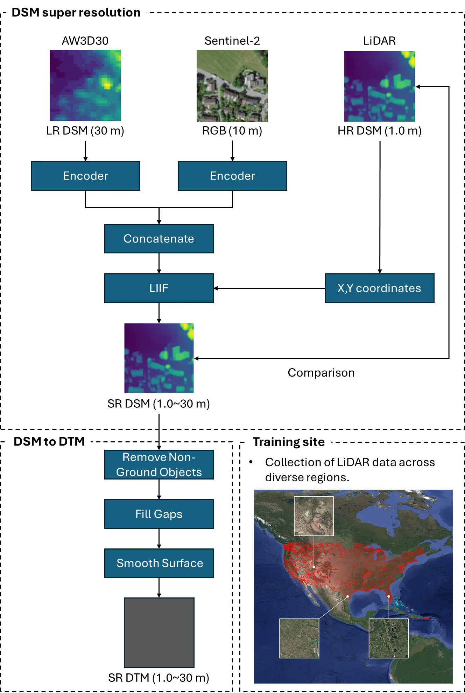
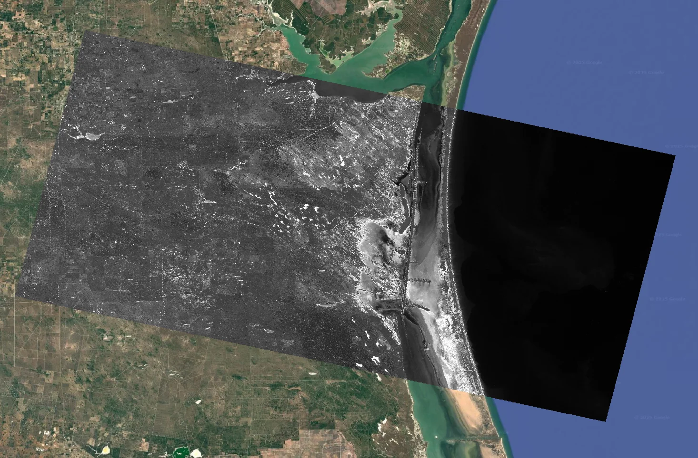
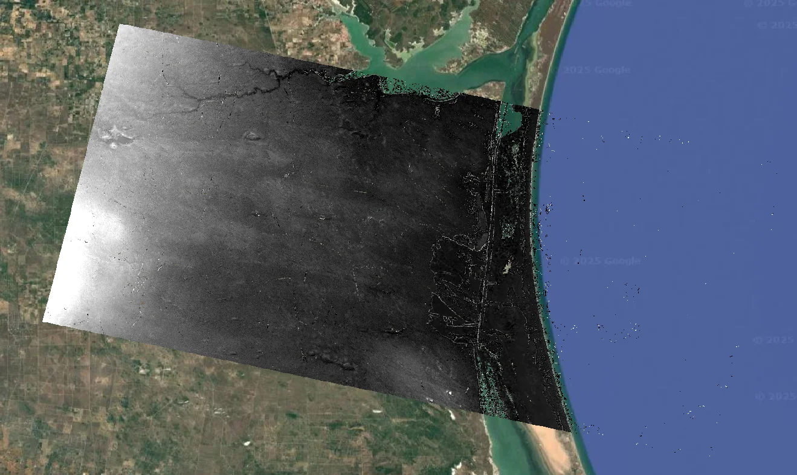
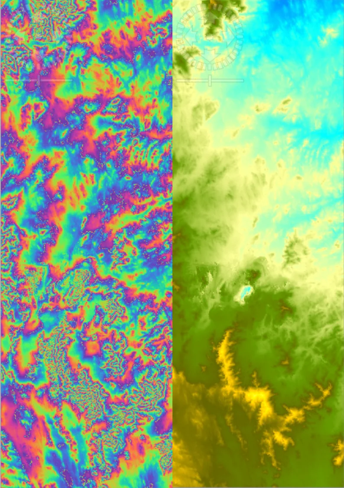
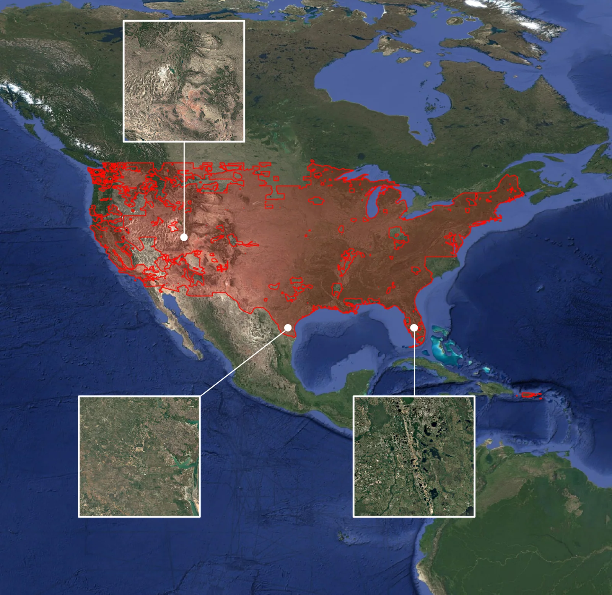

← 프로젝트 목록← All projects
중남미 고해상도 DTM 제작 및 초해상화High-Resolution DTM Generation for Latin America
중남미에는 30m급 무료 DEM밖에 없다. 저비용으로 5–10m DTM을 만들 수 있는지를 InSAR · 스테레오 · LiDAR 세 경로로 검증했다.Latin America only has free 30 m DEMs. We tested whether 5–10 m DTMs could be produced cheaply, via three routes: InSAR, stereo photogrammetry and LiDAR.
배경 · 목표Background
- 중남미에는 SRTM·ASTER GDEM·Copernicus GLO-30·ANADEM 등 30m급 무료 DEM만 존재하고 고해상도 DTM이 부족하다.
- 저비용 DSM/DTM 구축은 개발도상국, 오지 탐사, 국방·안보 지역에서 수요가 있다.
- 고해상도 DTM은 유량 시뮬레이션과 인프라 설계의 전제조건이다.
- Latin America has only 30 m free DEMs (SRTM, ASTER GDEM, Copernicus GLO-30, ANADEM) and little high-resolution terrain data.
- Low-cost DSM/DTM production has demand in developing regions, remote surveys and security applications.
- High-resolution DTMs are a prerequisite for flow simulation and infrastructure design.
방법Method
- Sentinel-1 SLC InSAR로 DSM 제작 — perpendicular baseline 150–300 m, temporal baseline은 가능한 짧게.
- SNAP 처리 체인: split → orbit → back-geocoding → interferogram → deburst → filtering → unwrapping → phase-to-elevation → terrain correction.
- COSMO-SkyMed InSAR로도 DSM 제작해 비교.
- SPOT-5 HRS 스테레오 영상 기반 DSM 생성 (전·후방 스테레오 쌍).
- 멕시코 0.5m LiDAR 데이터를 참값(GT)으로 확보.
- DSM→DTM 변환: slope 기반 필터(경사 10° 임계) → 단계적 보간으로 빈 공간 채움 → 가우시안 평활화.
- DSMs from Sentinel-1 SLC InSAR — perpendicular baseline 150–300 m, temporal baseline kept as short as possible.
- SNAP chain: split → orbit → back-geocoding → interferogram → deburst → filtering → unwrapping → phase-to-elevation → terrain correction.
- A second DSM from COSMO-SkyMed InSAR for comparison.
- DSM generation from SPOT-5 HRS stereo pairs (forward/backward).
- 0.5 m Mexican LiDAR secured as ground truth.
- DSM→DTM conversion: slope-based filtering (10° threshold) → stepwise interpolation of gaps → Gaussian smoothing.
결과Results
- Sentinel-1 InSAR DSM 제작 — 80 × 130 km 범위, 14 m 해상도 (SRTM 30 m 대비 향상)
- DSC 궤도 사례: temporal 12일 / perpendicular 157 m 조건에서 평균 오차 41 m (0.8%)
- LiDAR DSM→DTM 변환 검증: 실제 DTM 대비 평균 오차 0.7 m (0.76%), 최대 오차 30 m
- 식생이 없는 건조 지역에서 InSAR DSM 정확도가 특히 높음을 확인
- Sentinel-1 InSAR DSM over an 80 × 130 km area at 14 m resolution, finer than the 30 m SRTM baseline.
- Descending-orbit case: mean error 41 m (0.8%) with a 12-day temporal and 157 m perpendicular baseline.
- LiDAR DSM→DTM validation: mean error 0.7 m (0.76%) against the true DTM, with a 30 m maximum.
- Confirmed InSAR DSM accuracy is highest over arid, vegetation-free terrain.








배운 점 · 한계What I learned · Limitations
- InSAR 베이스라인 선택이 DEM 정확도를 어떻게 좌우하는지 실측으로 확인했다.
- DSM과 DTM의 차이, 그리고 비지형 객체 제거가 왜 어려운지를 데이터로 이해했다.
- 한계: 비교 가능한 고해상도 참값이 없는 지역에서는 정량 검증 자체가 불가능했다. 멕시코 LiDAR 지역만이 유일한 검증지였다.
- Saw empirically how baseline selection drives DEM accuracy.
- Understood from the data why removing non-terrain objects is the hard part of DSM→DTM.
- Limitation: without high-resolution ground truth, quantitative validation is simply impossible. The Mexican LiDAR site was the only place we could actually check.
관련 코드Code
저장소는 센서 → 위성 → 기법 순으로 정리돼 있고, 각 폴더에 입력·출력 표가 있습니다.The repository is organised by sensor, satellite and technique; each folder documents its inputs and outputs.
산출물Deliverables
- 연구개발 결과보고서
- DSM→DTM 변환 처리 체인
- 지역별 DSM 산출물
- R&D results report
- DSM→DTM processing chain
- Regional DSM products
원본 보고서와 발표자료는 사내 자료로 공개하지 않습니다. 분석 코드는 GitHub에 정리되어 있습니다.Source reports and decks are internal and not published here. Analysis code is organised on GitHub.